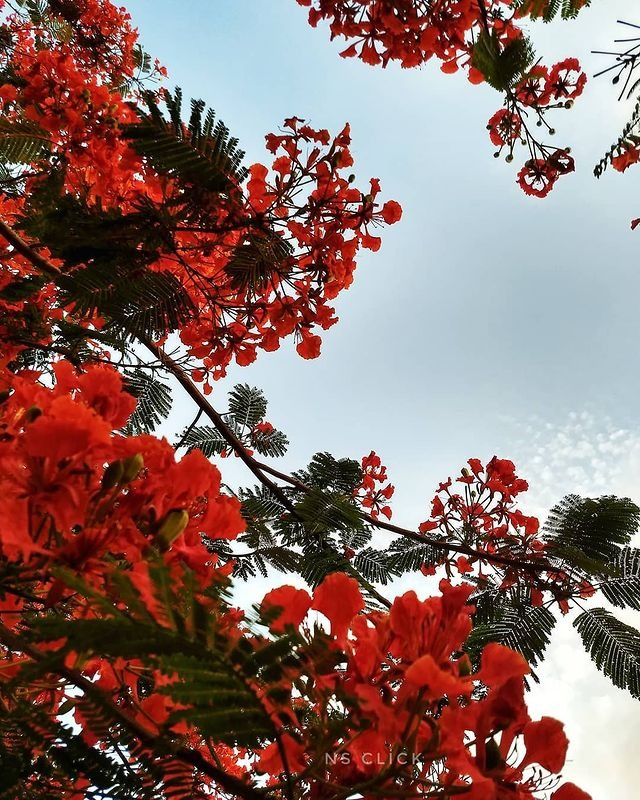

"പാരീസിലെ പൂക്കൾ ഇപ്പോളും ചുവന്നു തന്നെയല്ലേ?"
ബൈ പറഞ്ഞു ബസ്സിലേക്ക് കയറവെ മറുപടിയൊന്നും പ്രതീക്ഷിക്കാതെ തിരിഞ്ഞു നിന്നവൾ ചോദിച്ചു.
ഞാനൊന്നു ചിരിക്കുക മാത്രം ചെയ്തു, അവളും.
പാരീസ്.. പൂക്കൾ..
എത്ര അനായാസമായാണ് ചില വാക്കുകൾക്ക് നമ്മെ ഞൊടിയിടകൾക്കിടയിലെ ഓർമ്മകളുടെ ലോകത്തേക്ക് ഇങ്ങനെ കൂട്ടിക്കൊണ്ടു പോവാൻ കഴിയുന്നത് എന്നോർത്ത് ഞാൻ അത്ഭുതപ്പെട്ടു.
ഒരുമിച്ചിരിക്കാറുള്ളിടം. ഒരു ചെറിയ, വലിയ ഫ്രണ്ട് സർക്കിളിന്റെ ഉത്ഭവത്തിന് കാരണമായ, അതിന്റെ തമാശകൾക്കും തർക്കങ്ങൾക്കുമെല്ലാം സാക്ഷിയായ ഒരിടം.
പാരഡൈസ് (Paris Corner) ❤️
അവളുടെ എഴുത്തുകളിലെല്ലാം വാകയായും ഗുൽമോഹറായും അവിടുത്തെയാ തണൽമരം അതേപോലെ നിറഞ്ഞു നിന്നിരുന്നു, അതിലെ പൂക്കളും.
"ഈ പൂക്കൾ ചുവന്നു പൂക്കുവതോളം"
ആറു വർഷം മുന്നേ അവളെഴുതിയ ഒരു പ്രണയത്തിന്റെ കവിതയ്ക്ക് അന്ന് ഇങ്ങനെയൊരു തലക്കെട്ട് നിർദ്ദേശിക്കുമ്പോൾ, അവളത് സ്വീകരിക്കുമ്പോൾ എല്ലായിപ്പോഴത്തെയും പോലെ അഭിമാനമായിരുന്നു... അവയൊക്കെ വായനയ്ക്കായി ആദ്യം എന്നിലേക്ക് എത്തുന്നതോർത്ത്.
അല്ലെങ്കിലും ഒരു സൗഹൃദത്തിന്റെ ആയുസ്സിനെ അതിനെപ്പോളും തണലായി നിന്ന ആ വാകമരത്തിന്റെ ജീവന്റെ നിറത്തിനോടല്ലാതെ മറ്റെന്തിനോടുപമിക്കാനാണ്?
കാലം ഞങ്ങളെയെല്ലാം പല വഴികളിലേക്ക് കൊണ്ടുപോയി... പല വാകമരങ്ങളുടെയും ചോട്ടിലിരുത്തി...
എന്നാലും അതുവഴി പോരുമ്പോഴൊക്കെയും വണ്ടിയൊതുക്കി ആ തണലിൽ പോയിരിക്കാറുണ്ട്... ചോന്നുപൂക്കുമ്പോഴൊക്കെയും അതിന്റെയൊരു ഫോട്ടോയെടുത്ത് അവൾക്കയക്കാറുണ്ട്...
എന്നിട്ട് പാരീസിലെ പൂക്കൾ ഇന്നും ചുവന്നു തന്നെയാണെന്ന് പറയാറുണ്ട്...
തിരിച്ചു കിട്ടുന്ന സ്മൈലികളിൽ ഞങ്ങളുടെ ഓർമ്മകളെ ഒരുമിച്ചനുഭവിക്കാറുണ്ട്... ❤️
-DeOn-
• Memories
[ Add a comment to this post ]